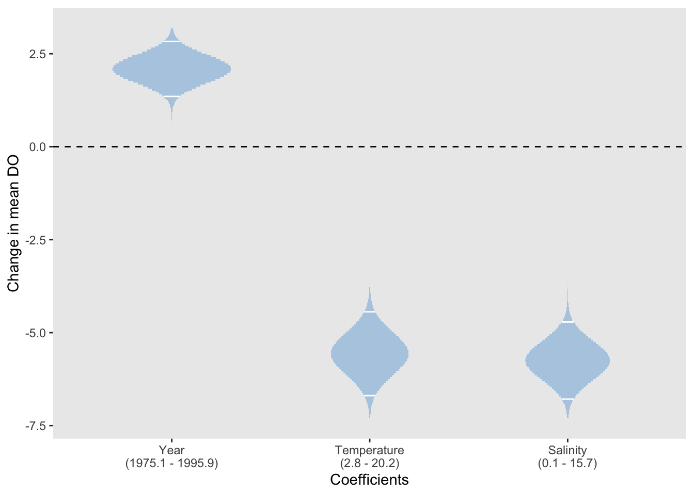

10.4 Inference on coefficients
Since the estimates are derived from the observed data, they are themselves influenced by the random variation on the data. It is extremely useful to measure the precision of the estimates through their estimated standard deviations, known in this context as the standard errors. When we ask for a summary of a fitted model, this will produce a variety of summary information, including a table of parameter estimates and standard errors, as in the table printed above.
Armed with an estimate \(\hat{\beta}_j\) of the parameter \(\beta_j\), plus a standard error \(s.e.(\hat{\beta}_j)\), a 95% confidence interval for \(\beta_j\) can be constructed as \[ (\hat{\beta}_j \pm 2 \ s.e.(\hat{\beta}_j)) \mbox{ or } (\hat{\beta}_j \pm t_{n-(p+1); 0.975} \ s.e.(\hat{\beta}_j)). \] where \(df\) denotes the degrees of freedom, namely the numbers of parameters, of the model. The confidence interval on the left is a rather rough and ready, approximate one, using two standard errors. The interval on the right provides a more accurate version, where \(t(n-df; 0.975)\) denotes the upper percentile of the \(t_{n-df}\) distribution beyond which lies probability \(0.025\). A confidence interval can be interpreted informally as a range of plausible values for the true, but unknown, parameter.
The summary function provides useful information on the estimated parameters of the model, among other things. The confint function in `R is a useful way of producing confidence intervals.
## Estimate Std. Error t value Pr(>|t|)
## (Intercept) 11.6453157 0.37417251 31.122852 7.953063e-67
## Temperature -0.2996037 0.03782472 -7.920846 5.184592e-13
## Salinity -0.4304683 0.04296172 -10.019809 2.329228e-18## 2.5 % 97.5 %
## (Intercept) 10.9059050 12.3847264
## Temperature -0.3743500 -0.2248575
## Salinity -0.5153659 -0.3455706Confidence intervals are of immediate use because hypotheses of interest can often be formulated as simple statements about parameters. For example, if variables \(x_j\) is unrelated to the mean value of \(y\) then this corresponds to \(\beta_j = 0\). If a confidence interval for \(\beta_j\) does not contain the value \(0\) then there is convincing evidence that the term involving \(\beta_j\) does contribute to the model. However, if the confidence interval does contain the value \(0\) then we would have justification for removing this term from the model.
> Use rp.coefficients.
There are no surprises in the confidence intervals for Temperature and Salinity as it was clear from the intial plots that these variables have a strong relationship with DO. It is more interesting to investigate possible effects of Year now that the strong effects of other variables have been accounted for.
model_with_year <- lm(DO ~ Year + Temperature + Salinity, data = clyde.sub)
summary(model_with_year)$coefficients## Estimate Std. Error t value Pr(>|t|)
## (Intercept) -144.82058626 42.04623736 -3.444317 7.462292e-04
## Year 0.07893907 0.02121210 3.721417 2.814067e-04
## Temperature -0.32718864 0.03703196 -8.835305 2.790434e-15
## Salinity -0.39551340 0.04226697 -9.357505 1.289770e-16## 2.5 % 97.5 %
## Year 0.03701902 0.1208591
> Discuss the scaling over the range of the covariate, to make the effects comparable.
Interestingly, there is now evidence of an increase in DO with Year. The plot below helps in understanding what is happening here. As we cannot easily view the effects of three variables simultaneously, we will consider a model with Year and Temperature for illustration. If the plot below is rotated to show DO against Year on the front face this replicates the scatterplot at the start of the chapter, with huge variation and little evidence of a relationship evident. Rotating the plot shows the large amount of variation which is accounted for by Temperature, allowing a small but noticeable effect of Year to be seen.
An equivalent analysis involves the construction of the quantity \[ \hat{\beta}_j / s.e.(\hat{\beta}_j) , \] known as the t-statistic. This is used in a formal test with the null hypothesis that \(\beta_j = 0\). If the t-statistic is greater than \(t(n-df; 0.975)\) (or the more rough-and-ready value \(2\)) then we have significant evidence that this term should be retained in the model.
The small p-value for Year can be seen in the table of coefficients above. This is simply a re-expression of the conclusions drawn from the confidence interval.